Accès libre
Esprit critique, désinformation, biais cognitifs : des jeux à jouer directement dans le navigateur, en classe ou à la maison. par Antonin Atger
Le jeu phare
Accès libre
Fakemètre
Vraie info ou fake news ?
Trouve les bonnes sources et mesure la fiabilité de chaque affirmation. Trois niveaux, des affirmations du quotidien aux vraies controverses, et un mode Créateur pour inventer tes propres questions.
Ta collection
0 jeu joué sur 12
Famille · 12 jeux
Jeux
Choisis un thème, un âge, ou les deux : la liste se met à jour.
Thème
Âge
Les 12 jeux
Accès libre
Accès libre
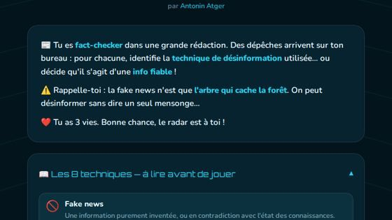
Code établissement
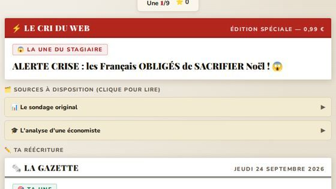
Code établissement
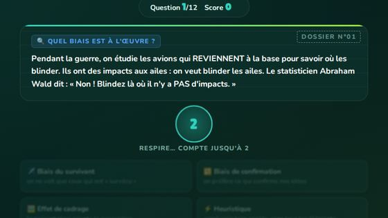
Code établissement
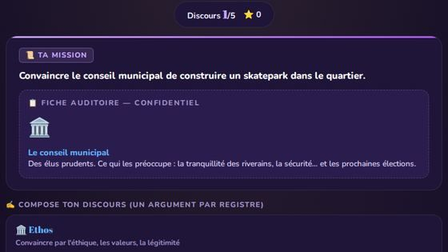
Code établissement
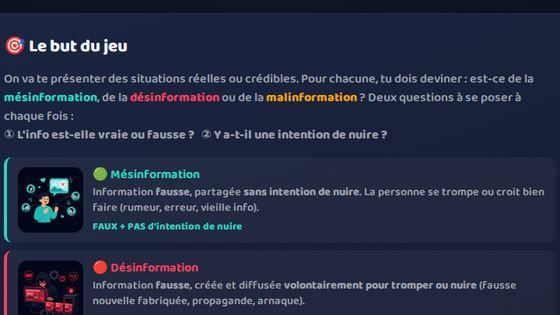
Code établissement
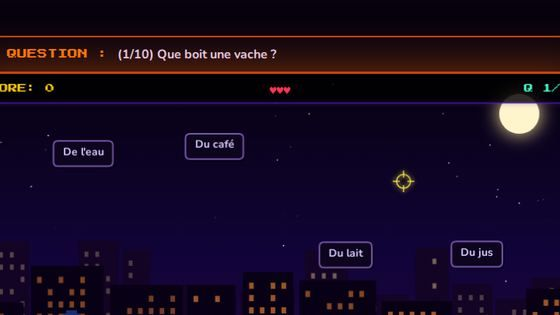
Code établissement
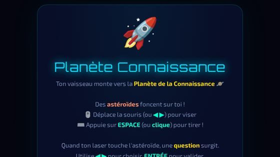
Code établissement
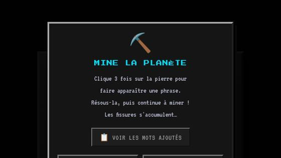
Code établissement
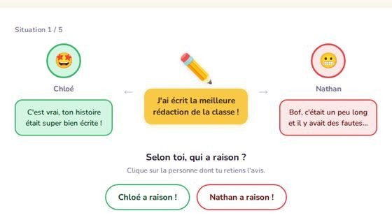
Code établissement
Aucun jeu pour cette combinaison.
Pour aller plus loin : les catalogues
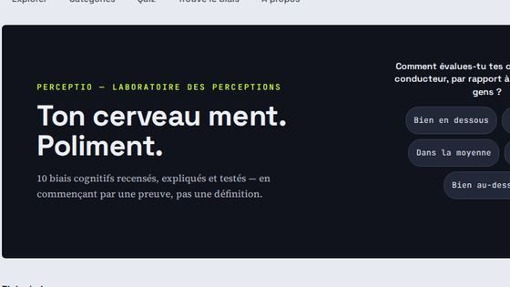
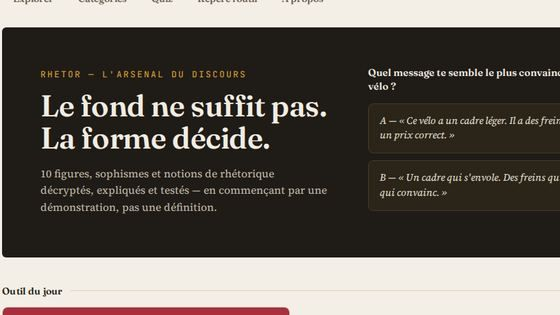
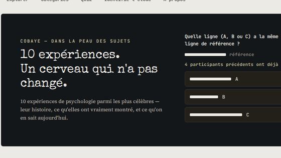
Famille · 4
Illusions & démonstrations
Ce qu’on montre, sans gagner ni perdre. Idéal pour lancer une discussion en classe.
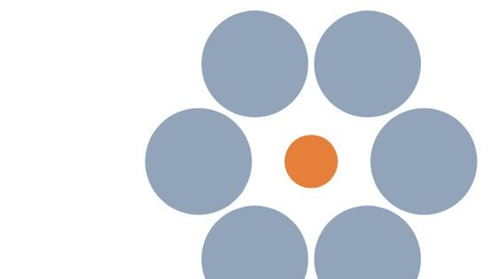
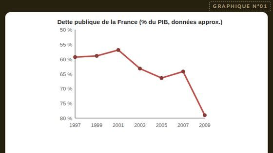
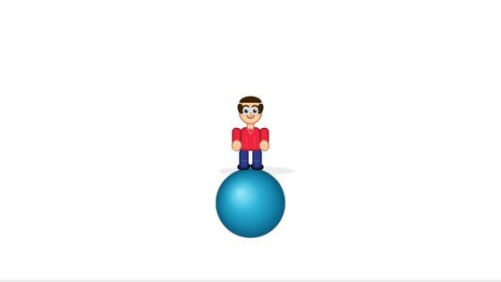
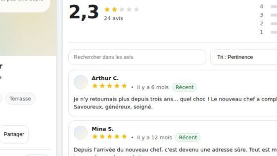
Famille · 3
Interventions
Ce qui sert à animer devant un public : à projeter, ou à jouer tous ensemble.
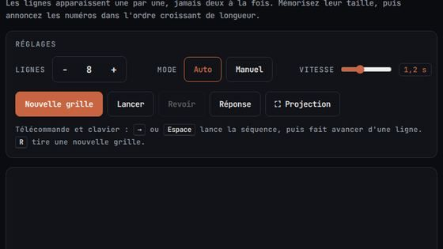
Pour animer
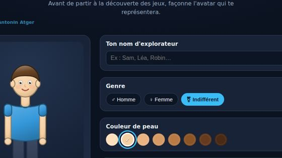
Pour animer
Pour animer
Hors interventions scolaires : Signaux, Le Recrutement, Ouvertures aux échecs